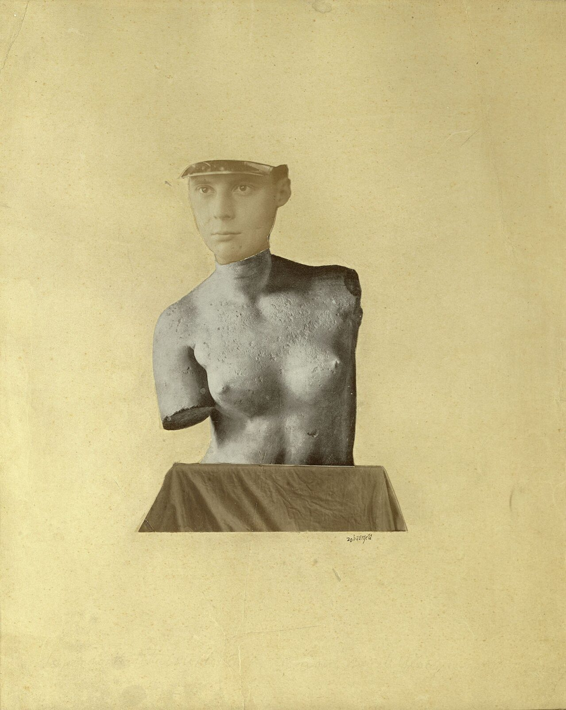

References / Illustration / 482
Typische Vertikalklitterung als Darstellung des Dada Baargeld, 1920
Cologne Dadaist Johannes Theodor Baargeld pastes a photograph of his own capped head on a reproduction of the Venus de Milo’s torso, and leaves the cut edges in view.
- Source
- Wikimedia Commons: Baargeld, Typische Vertikalklitterung als Darstellung des Dada Baargeld (Kunsthaus Zürich)
- Creator
- Johannes Theodor Baargeld (Alfred Emanuel Ferdinand Gruenwald, 1892–1927)
- Made
- 1920
- Style
- Dada (agent-proposed, not yet reviewed by a person)
- Moods
- Ironic, uncanny, irreverent
- Evidence
- Inspected the Commons image (1438 × 1800 px original, viewed at 1200 px). Commons describes it as the Kunsthaus Zürich, Graphische Sammlung, sheet, cropped, and takes it from a Cologne cemetery-society website, not from the museum. No Kunsthaus inventory number was checked.
- Reviewed
- Rights
- Open license, stored. License: public domain. Rights policy

Context
Commons records the work as Typical Vertical Mess as Depiction of the Dada Baargeld, 1920, Kunsthaus Zürich, Graphische Sammlung, with the license PD-Art (PD-old-auto-expired, death year 1927). Commons.
An exhibition caption gives the medium as photomontage, 37.1 × 31 cm, Kunsthaus Zürich, Grafische Sammlung. Art Blart. MoMA used the work in the audio guide of its Dada exhibition. MoMA audio.
Baargeld founded Cologne Dada with Max Ernst in 1919–1920. Wikipedia: Johannes Theodor Baargeld.
Observed
- A black-and-white photograph of a young man’s face under a peaked cap is cut along the jaw and neck and laid on a photograph of a classical marble torso with broken arms.
- The face is warmer and smoother in tone than the grey, pitted marble, so the join is plain.
- The torso stands on a cut photograph of a cloth-draped plinth, whose trapezoid edge is clearly cut.
- The montage sits in the middle of a large sheet of yellowed paper with stains and creases. A small signature, “zobaargeld”, is written at lower right.
- There is no type and no second color.
Why it belongs
The work shows the photomontage branch of Dada at its plainest: two photographs, one cut, and a joke about the classical ideal. The empty sheet makes the cut more visible than in the crowded Berlin montages.
Borrow
Join two black-and-white photographs at one clean cut, and let the difference in tone show the join.
Place one small montage in a large empty field of warm paper.
Measured
Machine-extracted by tools/image-traits.py on . Full measurement.
- Mean chroma
- 0.25
- Palette
- #d2c590 32%
- #c9ba84 30%
- #e5d8a0 23%
- #726445 3%
- #b8b6a2 2%
- #837554 2%
- #5d523a 2%
- #a19e8b 2%

